30 轨迹（Locus）
<p align="justify"></p>
平面几何(II) 的结束语留了一个钩子：上一章从已知的图形找性质，这一章反其道而行，从条件找图形。其实上一章已经做了不少轨迹的工作而不自知：外心是「到三顶点等距」的点，内心是「到三边等距」的点，两条等距引理恰好把「线段的垂直平分线」与「角的平分线」刻画成完整的点集。本章给这类「条件定图形」的思考一个正式的名字：轨迹，并把它系统化。
全章三条主线。第一，几何视角（§30.1）：建立轨迹的概念，先用轨迹语言把线段、圆、半平面与抛物线这些基本对象重新定义一次，直线则按 §20.1.2 的定义作轨迹语言的重述（§30.1.2），再逐条走一遍课程要求的两类同型条件的轨迹（§30.1.3），并把「轨迹的方程」由条件式直接给出（§30.1.1 注记（轨迹的方程））。它们全是老朋友，改用「满足条件的点的集合」来描述之后，视角就统一了。第二，代数视角（§30.2）：把几何条件嵌进直角坐标系，用「建、设、限、代、化」五步法把条件翻译成关于
、 的方程，配合直接法、定义法与参数法（增润）三种策略；课程要求会求轨迹为直线、圆和抛物线（形如 ）的方程，三类都会在正文出现。第三，延伸视角（§30.3，超出常规课程要求）：重新审视抛物线：在 二次函数 里它是 的图像，在本章它是「到定点与定直线等距」的点的轨迹，系数 与焦距的倒数关系将揭开开口宽窄的几何本源。
生活中处处是轨迹：长时间曝光的照片把运动光点的痕迹固定成一条亮线，转弯的汽车在底片上画出一段圆弧，星星因地球自转画出以天极为圆心的星迹。本章就从这些痕迹说起：§30.1 平面几何中的轨迹；§30.2 轨迹的代数方程；§30.3 延伸：抛物线的几何本源；§30.4 全章小结。
30.1 平面几何中的轨迹（Loci in Plane Geometry）
本节难度上限：T B- ｜ C D+ ｜ E B- ｜ Q B-
30.1.1 动点的限制条件（Constraints on a Moving Point）
§16.1.1 把含自由变量的陈述句称为开放命题，概括原则说明：每一个开放命题都概括出一个集合，集合就是开放命题的外延，用描述法记作
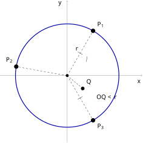
查看 TikZ 原始碼
\begin{document}
\begin{tikzpicture}[scale=1.5]
\draw[gray,->] (-2.6,0)--(2.9,0);
\draw[gray,->] (0,-2.6)--(0,2.9);
\draw[blue!65!black,very thick] (0,0) circle (2);
\coordinate (O) at (0,0);
\coordinate (P1) at (1,1.7321);
\coordinate (P2) at (-1.9696,0.3473);
\coordinate (P3) at (1,-1.7321);
\coordinate (Q) at (0.6,-0.5);
\draw[dashed] (O)--(P1);
\draw[dashed] (O)--(P2);
\draw[dashed] (O)--(P3);
\draw[gray,densely dashed,thick] (O)--(Q);
\draw (0.408,0.919)--(0.592,0.813);
\draw (0.739,0.535)--(0.775,0.743);
\draw (0.408,-0.919)--(0.592,-0.813);
\fill (O) circle (1.6pt);
\fill (P1) circle (2.4pt);
\fill (P2) circle (2.4pt);
\fill (P3) circle (2.4pt);
\fill (Q) circle (2.0pt);
\node[above right] at (1.08,1.79) {$P_1$};
\node[above left] at (-2.03,0.42) {$P_2$};
\node[below right] at (1.08,-1.79) {$P_3$};
\node[above right] at (0.66,-0.44) {$Q$};
\node[left] at (0.52,1.02) {$r$};
\node[right] at (1.05,-0.85) {$OQ<r$};
\node at (2.78,-0.24) {$x$};
\node at (-0.28,2.78) {$y$};
\end{tikzpicture}
\end{document}把平面视为
动点：轨迹中的点
坐标形式：建立坐标系后动点记作
逐点判据：任取一点
描述法只是「取全部使
为真的 」的记号缩写，不增添新含义；用文字说，轨迹就是满足某一特定几何条件的所有点组成的集合。
直观理解：设想平面上有一个点按某种规则运动：规则是「与定点
图 30-1：条件
确定的轨迹，是以 为圆心、 为半径的圆。
、 、 到 的距离都等于 （三道单撇），都在轨迹上；
满足 ，不满足条件，也不在轨迹上。
条件
「
把式子整理成一端为零的形状，就记作
这个代数式就是轨迹
轨迹
两件实例：轨迹「以
形状与位置缺一不可：只说「一个圆」或「一条直线」，读者不知道是哪一个圆、哪一条直线，几何意义就没有说全。完整描述一条轨迹，就是把它的形状与位置一并说出来；这是本章一切描述题的标准，§30.1.3 的警告与 §30.2.2 注记（课程要求的三类轨迹方程）用的都是这个口径。
几何意义与方程分工不同：几何意义是轨迹自身的形状与位置，与坐标系无关；方程是轨迹嵌入坐标系后的代数写法（注记（轨迹的方程）），同一个圆取不同的坐标原点，方程随之改变，几何意义不变。
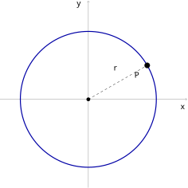
查看 TikZ 原始碼
\begin{document}
\begin{tikzpicture}[scale=1.5]
\draw[gray,->] (-2.6,0)--(2.9,0);
\draw[gray,->] (0,-2.6)--(0,2.9);
\draw[blue!65!black,very thick] (0,0) circle (2);
\coordinate (O) at (0,0);
\coordinate (P) at (1.7321,1.0);
\draw[dashed] (O)--(P);
\fill (O) circle (1.6pt);
\draw[fill=white] (1.7321,1.0) circle (2.2pt);
\node[below left] at (1.62,0.88) {$P$};
\node[left] at (0.94,0.9) {$r$};
\node at (2.78,-0.24) {$x$};
\node at (-0.28,2.78) {$y$};
\end{tikzpicture}
\end{document}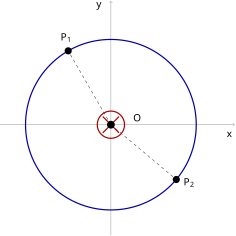
查看 TikZ 原始碼
\begin{document}
\begin{tikzpicture}[scale=1.5]
\draw[gray,->] (-2.6,0)--(2.9,0);
\draw[gray,->] (0,-2.6)--(0,2.9);
\draw[blue!65!black,very thick] (0,0) circle (2);
\coordinate (O) at (0,0);
\coordinate (P1) at (-1,1.7321);
\coordinate (P2) at (1.5321,-1.2856);
\draw[dashed] (O)--(P1);
\draw[dashed] (O)--(P2);
\draw[red!65!black,very thick] (O) circle (0.32);
\draw[red!65!black,very thick] (-0.19,-0.19)--(0.19,0.19);
\draw[red!65!black,very thick] (-0.19,0.19)--(0.19,-0.19);
\fill (P1) circle (2.4pt);
\fill (P2) circle (2.4pt);
\fill (O) circle (2.6pt);
\node[right] at (0.44,0.16) {$O$};
\node[above left] at (-0.84,1.86) {$P_1$};
\node[right] at (1.62,-1.36) {$P_2$};
\node at (2.78,-0.24) {$x$};
\node at (-0.28,2.78) {$y$};
\end{tikzpicture}
\end{document}把「
- 完备性（Completeness）：所有满足条件
- 纯粹性（Exclusiveness）：轨迹上的每一点都满足条件
两个方向各有一幅对照图，条件都取作「
图 30-2A：集合少了一点。
空心点
在圆上，满足 ，却没被收进集合。
再看纯粹性被破坏的情形：候选的点集把圆心
图 30-2B：集合多了一点。
、 满足 ，在轨迹上；被叉号标出的圆心 不满足条件，却混在集合里。
两个方向同时成立，条件与点集才互相完全确定：漏一点则不完备，多一点也不纯粹。
「动点」只是直观形象，数学中的轨迹不一定涉及点的移动。轨迹是一个集合，由条件
集合的视角立好之后，许多熟悉的图形都可以改用轨迹的语言来说。本节余下两小节的分工是：§30.1.2 把线段、圆、半平面与拋物线各写成一条点集条件，直线则只作轨迹语言的重述；§30.1.3 逐一走一遍条件同型的两种基本轨迹。两节连起来，为 §30.2 的一切代数计算备好语言。它们的成果最后都要按几何意义说出来：轨迹是什么形状、在什么位置。
30.1.2 几何对象的轨迹定义（Defining Geometric Objects by Loci）
本节把 §30.1.1 建立的语言反过来用：不是「给图形找方程」，而是「给条件定图形」。线段、圆、拋物线这些老朋友，本节把它们改写成一句话的轨迹定义：说清动点在什么条件下运动，它形成的轨迹就是什么图形。直线已在 §20.1.2 定义过，本节只用轨迹语言重述一次。本节不引入新的课程要求；角与垂直沿用第八、九章的说法（§8.1 已给两直线垂直的定义），本节不重述。
前面各章认出这些图形，走过三条路：
- 直观：§8.1「基本元素」小节把点、线、面列为几何学的原始概念，直线靠图形与记号认识；
- 作图动作：圆规两脚保持定长转一周画出圆，三角尺贴着定直线推一格画出平行线；
- 方程（§20.3.2、§21.1.1）：先有方程，再认它的解集是什么图形。
三条路各有各的用处，但都不是轨迹题要的方向。轨迹要的是先给几何条件，再问条件定出什么图形。本节就按这个方向，把几个常用图形各写一次定义；往后各章再说「线段」「圆」「拋物线」，指的都是本节给出的点集。三点共线的判据已在 §20.3.1 建立，本节直接取用它的两条引理。
每条定义都写成同一个句式：动点
先把「三点在同一条直线上」的判据摆好。这件事 §20.3.1 已办完：那里的两条引理（三点共线的距离刻画、三点共线的坐标判据）与推论（过两点的直线方程）把直线写成一个方程，本节取用它们的结论。
其一，距离判据。三点共线
其二，坐标判据。设
它不含斜率，因而铅垂线的情形也在内。把这条等式展开、移项就是
有了这两条判据，下面几个图形都能写成动点的轨迹。
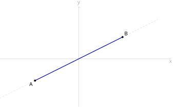
查看 TikZ 原始碼
\begin{document}
\begin{tikzpicture}[scale=1.5]
\coordinate (A) at (-2,-1);
\coordinate (B) at (2,1);
\draw[gray!60, ->] (-3.6,0) -- (4.2,0) node[below] {$x$};
\draw[gray!60, ->] (0,-2.2) -- (0,2.4) node[above] {$y$};
\draw[gray!50, dashed] (-3.6,-1.8) -- (3.6,1.8);
\draw[blue!65!black, very thick] (A) -- (B);
\fill (A) circle (1.3pt) node[below left] {$A$};
\fill (B) circle (1.3pt) node[above right] {$B$};
\end{tikzpicture}
\end{document}设
介于两点之间：动点
线段
这条线段如图 30-3A 所示，粗蓝部分即所求点集。
图 30-3A：线段
。 粗蓝部分为
的点集；两端之外的部分以灰虚线画出，表示不在线段上。
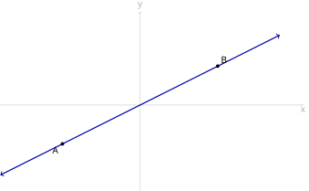
查看 TikZ 原始碼
\begin{document}
\begin{tikzpicture}[scale=1.5]
\coordinate (A) at (-2,-1);
\coordinate (B) at (2,1);
\draw[gray!60, ->] (-3.6,0) -- (4.2,0) node[below] {$x$};
\draw[gray!60, ->] (0,-2.2) -- (0,2.4) node[above] {$y$};
\draw[blue!65!black, very thick, <->] (-3.6,-1.8) -- (3.6,1.8);
\fill (A) circle (1.3pt) node[below left] {$A$};
\fill (B) circle (1.3pt) node[above right] {$B$};
\end{tikzpicture}
\end{document}直线不在本节定义：它已在 §20.1.2 定义为与
直线
用 §20.3.1 的引理（三点共线的坐标判据）把「共线」换成坐标，就得到它的坐标形式
本节两幅图共用同一条直线
轨迹的条件是关于
图 30-3B：直线
。 整条线都是点集，两端都无限延伸；
、 是其上两个定点。
这里有一层分寸：§8.1「基本元素」小节把直线列为几何学的原始概念，§20.1.2 与本节都不推翻这一点，「直线是什么样的东西」仍由公理回答，给出的是点
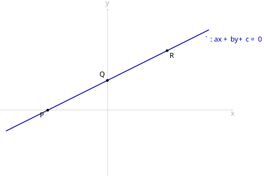
查看 TikZ 原始碼
\begin{document}
\begin{tikzpicture}[scale=1.5]
\coordinate (P) at (-2,0);
\coordinate (Q) at (0,1);
\coordinate (R) at (2,2);
\draw[gray!60, ->] (-3.6,0) -- (4.2,0) node[below] {$x$};
\draw[gray!60, ->] (0,-2.2) -- (0,3.4) node[above] {$y$};
\draw[blue!65!black, very thick] (-3.4,-0.7) -- (3.4,2.7);
\node[blue!65!black, below right] at (3.2,2.55) {$\ell: ax+by+c=0$};
\fill (P) circle (1.3pt) node[below left] {$P$};
\fill (Q) circle (1.3pt) node[above left] {$Q$};
\fill (R) circle (1.3pt) node[below right] {$R$};
\end{tikzpicture}
\end{document}坐标式再化一步就是
其中
于是「直线
「直线方程」与「直线型轨迹的方程」于是是同一对象的两种读法：动点
图 30-4：直线
与其方程互为确定。 直线
上每一点（如图中的 、 、 ）的坐标都满足 ； 反过来，这个方程的每一个解
对应的点都在 上。
直线与线段对付的是「共线」，圆与抛物线对付的则是「距离的比较」。圆所满足的条件正是课程要求里「与一点保持固定距离」这一类，本节把它与紧挨着的两类点集一并写清。
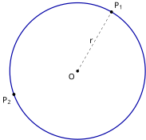
查看 TikZ 原始碼
\begin{document}
\begin{tikzpicture}[scale=1.5]
\coordinate (O) at (0,0);
\coordinate (P1) at (60:2);
\coordinate (P2) at (200:2);
\draw[blue!65!black, very thick] (O) circle (2);
\draw[dashed] (O) -- (P1);
\node[left] at (0.55,0.87) {$r$};
\fill (O) circle (1.2pt) node[below left] {$O$};
\fill (P1) circle (1.3pt) node[above right] {$P_1$};
\fill (P2) circle (1.3pt) node[below left] {$P_2$};
\end{tikzpicture}
\end{document}查看 TikZ 原始碼
\begin{document}
\begin{tikzpicture}[scale=1.5]
\coordinate (O) at (0,0);
\coordinate (Q) at (0.5,0.7);
\coordinate (R) at (2.9,1.3);
\draw[thick] (O) circle (2);
\draw[dashed] (O) -- (Q);
\draw[dashed] (O) -- (R);
\node[left] at (0.25,0.35) {$OQ<r$};
\node[below right] at (2.2,0.9) {$OR>r$};
\fill (O) circle (1.2pt) node[below left] {$O$};
\fill (Q) circle (1.3pt) node[above right] {$Q$};
\fill (R) circle (1.3pt) node[above right] {$R$};
\end{tikzpicture}
\end{document}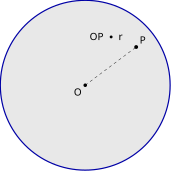
查看 TikZ 原始碼
\begin{document}
\begin{tikzpicture}[scale=1.5]
\coordinate (O) at (0,0);
\coordinate (P) at (1.2,0.9);
\fill[gray, opacity=0.18] (O) circle (2);
\draw[blue!65!black, very thick] (O) circle (2);
\draw[dashed] (O) -- (P);
\node[above] at (0.5,0.95) {$OP \le r$};
\fill (O) circle (1.2pt) node[below left] {$O$};
\fill (P) circle (1.3pt) node[above right] {$P$};
\end{tikzpicture}
\end{document}设
圆：动点
以
（两边非负，平方是等价变形，§6.3.1）。这个条件正是课程要求里「与一点保持固定距离」那一类，答案已在定义里给出，§30.1.3 与 §30.2.1 都不再另立定理，如图 30-5A 所示：
图 30-5A：圆
。 曲线即
。
圆的内部与圆的外部：条件分别换成
图 30-5B 中
图 30-5B：圆的内部与外部。
圆以细线画出，
与 两段以虚线连出。
圆盘：条件换成
图 30-5C 的阴影部分即圆盘（含边界圆），
图 30-5C：圆盘。
阴影部分含边界圆。
圆周、周长、圆盘三种说法的分界要分清：
- 圆周是
- 周长是圆周这条曲线的长度
- 圆的面积严格说是圆盘这个区域的面积
§8.9「圆的基本概念」小节已把圆周（那条曲线本身）与周长（圆周一周的长度
再说「在哪一侧」。好几处论证要靠位置断言：§28.2.2 的可行区域、§30.2.1 里的「分居
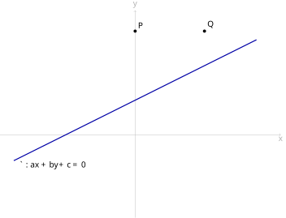
查看 TikZ 原始碼
\begin{document}
\begin{tikzpicture}[scale=1.5]
\draw[gray!60, ->] (-3.9,0) -- (4.2,0) node[below] {$x$};
\draw[gray!60, ->] (0,-2.4) -- (0,3.6) node[above] {$y$};
\draw[blue!65!black, very thick] (-3.5,-0.75) -- (3.5,2.75);
\node[below right] at (-3.4,-0.7) {$\ell: ax+by+c=0$};
\fill (0,3) circle (1.3pt) node[above right] {$P$};
\fill (2,3) circle (1.3pt) node[above right] {$Q$};
\end{tikzpicture}
\end{document}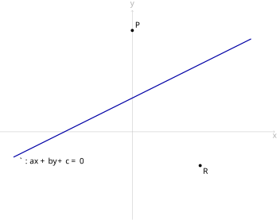
查看 TikZ 原始碼
\begin{document}
\begin{tikzpicture}[scale=1.5]
\draw[gray!60, ->] (-3.9,0) -- (4.2,0) node[below] {$x$};
\draw[gray!60, ->] (0,-2.6) -- (0,3.6) node[above] {$y$};
\draw[blue!65!black, very thick] (-3.5,-0.75) -- (3.5,2.75);
\node[below right] at (-3.4,-0.7) {$\ell: ax+by+c=0$};
\fill (0,3) circle (1.3pt) node[above right] {$P$};
\fill (2,-1) circle (1.3pt) node[below right] {$R$};
\end{tikzpicture}
\end{document}设直线
半平面：动点
两者称为
闭半平面：把边界
称为闭半平面。至于
三块之分：任一实数或正、或负、或零，故
同侧：两点
即两值同号，则称
图 30-6A：同侧的两点。
两点都在
的上方一侧，代入 所得两值同号。
异侧：把上面的乘积换成小于
图 30-6B：异侧的两点。
在 上方、 在 下方，两值异号。
这就是 §28.2.1 半平面定理中
最后是抛物线。§21.1.1 把抛物线定义为二次函数
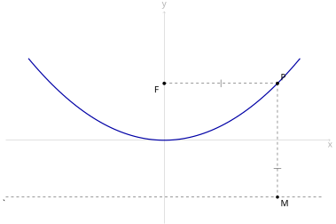
查看 TikZ 原始碼
\begin{document}
\begin{tikzpicture}[scale=1.5]
\coordinate (F) at (0,1.5);
\coordinate (P) at (3,1.5);
\coordinate (M) at (3,-1.5);
\draw[gray!60, ->] (-4.2,0) -- (4.4,0) node[below] {$x$};
\draw[gray!60, ->] (0,-2.2) -- (0,3.4) node[above] {$y$};
\draw[dashed] (-4.2,-1.5) -- (4.2,-1.5);
\node[below left] at (-4.1,-1.5) {$\ell$};
\draw[blue!65!black, very thick, domain=-3.6:3.6, samples=80] plot (\x, {\x*\x/6});
\draw[dashed] (F) -- (P);
\draw[dashed] (P) -- (M);
\draw (1.5,1.6) -- (1.5,1.4);
\draw (3.1,-0.75) -- (2.9,-0.75);
\fill (F) circle (1.3pt) node[below left] {$F$};
\fill (P) circle (1.3pt) node[above right] {$P$};
\fill (M) circle (1.2pt) node[below right] {$M$};
\end{tikzpicture}
\end{document}设
抛物线：动点
下运动，即它到定点
如图 30-7 所示，
图 30-7：抛物线的定义条件。
定点
、定直线 （虚线，不经过 ）； 为抛物线上一点， 垂直于 ，垂足为 。
与 各带一道单撇，表示两段相等。
定点
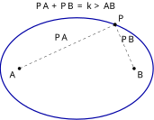
查看 TikZ 原始碼
\begin{document}
\begin{tikzpicture}[scale=1.5]
\coordinate (A) at (-1.5,0);
\coordinate (B) at (1.5,0);
\coordinate (P) at (1,1.1456);
\draw[blue!65!black, very thick] (0,0) ellipse (2 and 1.3229);
\draw[dashed] (P) -- (A);
\draw[dashed] (P) -- (B);
\node[above] at (-0.4,0.65) {$PA$};
\node[above] at (1.35,0.6) {$PB$};
\node[above] at (0,1.45) {$PA+PB=k>AB$};
\fill (A) circle (1.2pt) node[below left] {$A$};
\fill (B) circle (1.2pt) node[below right] {$B$};
\fill (P) circle (1.3pt) node[above right] {$P$};
\end{tikzpicture}
\end{document}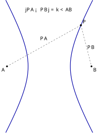
查看 TikZ 原始碼
\begin{document}
\begin{tikzpicture}[scale=1.5]
\coordinate (A) at (-2,0);
\coordinate (B) at (2,0);
\coordinate (P) at (1.5,1.9365);
\draw[blue!65!black, very thick, variable=\t, domain=-1.35:1.35, samples=60] plot ({cosh(\t)}, {1.7321*sinh(\t)});
\draw[blue!65!black, very thick, variable=\t, domain=-1.35:1.35, samples=60] plot ({-cosh(\t)}, {1.7321*sinh(\t)});
\draw[dashed] (P) -- (A);
\draw[dashed] (P) -- (B);
\node[above] at (-0.25,1.15) {$PA$};
\node[right] at (1.72,0.9) {$PB$};
\node[above] at (0,2.45) {$\left|PA-PB\right|=k<AB$};
\fill (A) circle (1.2pt) node[below left] {$A$};
\fill (B) circle (1.2pt) node[below right] {$B$};
\fill (P) circle (1.3pt) node[above right] {$P$};
\end{tikzpicture}
\end{document}本注记只述结论、不作证明，以下曲线超出 DSE 常规课程的要求。把定义里的等式换一个写法，同一套「条件
椭圆：动点
它形成的轨迹就是椭圆，如图 30-8A 所示（
图 30-8A：椭圆。
、 为两定点， 为曲线上的点， 、 以虚线连出；此处 。
双曲线：动点
它形成的轨迹就是双曲线，两支各对应差取正与取负的一种，如图 30-8B 所示（
图 30-8B：双曲线。
曲线分左、右两支，
画在右支上， 、 以虚线连出；此处 。
阿波罗尼斯圆：动点
它形成的轨迹是一个圆。
同一个条件，只把动点活动的舞台从平面换成空间，轨迹就换一个图形：
抛物线之所以例外地写进定义，是因为「求抛物线型的轨迹方程」本身属课程要求。
各对象的轨迹刻画放在一起对照，可以看出「条件定图形」这套做法的规格。
| 图形（即轨迹） | 动点 |
轨迹的坐标式 | 前文的说法 | 本节改写为 |
|---|---|---|---|---|
| 直线 |
§20.1.2 的定义（平面上的直线） | 无；定义在 §20.1.2，判据与方程已在 §20.3.1、§20.3.2 建立 | ||
| 线段 |
直线式再加两端之间的限制 | §8.1「线段的记法与长度」小节「两点之间的部分」 | 「之间」的距离刻画 | |
| 圆 |
§8.9「圆的基本概念」小节文字集合、§29.1.1 符号式 | 与内部、圆盘分立；即「与一点保持固定距离」这一类条件 | ||
| 圆的内部／圆盘 | 同型不等式 | §29.2.1 比 |
正式的集合式；圆面积即圆盘面积 | |
| 半平面／同侧 | 同左 | §28.2.1 内嵌于定理 | 术语的正式定义与符号判据 | |
| 抛物线 | 标准方程见 §30.3.2 | §21.1.1 二次函数的图像 | 几何定义前置，专名留 §30.3.1 | |
| 角、垂直 | 不写成条件（遵从直观） | 垂直的坐标判据 |
§8.1「角与度量」小节（角、直角的分类与两直线垂直的定义） | 本节不重定义 |
读法只有一条：表中第二列是动点
对象有了定义，下一节把课程要求的五类条件逐一带到这些定义上去。其中三类先已有着落：「与一点保持固定距离」就是圆的定义本身；「与一直线保持固定距离」与「与两平行线保持相等距离」两类都有现成的坐标公式可用，一并留给 §30.2.1 的定理。余下两类同型，条件都是「两段距离相等」，下一节各立定理与证明。
30.1.3 两种基本轨迹（The Two Basic Loci）
点到直线的距离（§8.6 的意义，坐标公式见 §20.5.1）记作
描述轨迹时，类型与位置都要说全：「线段
两条轨迹的呈现方式一致：条件与图形各说一次，条件写成点集，图形由定理点名；证明的两个方向分别对应纯粹性与完备性，工具是 §29.1.1、§29.3.1 两条等距引理。另外三类的描述与集合式不在这里重列：圆留在 §30.1.2 的定义里，「与定直线保持固定距离」与「与两平行线保持等距」两类连同其方程留在 §30.2.1 的定理里。
先看第一条。§29.1.1 的垂直平分线等距引理说「垂直平分线上的点到两端点等距，且到两端点等距的点在垂直平分线上」，用轨迹的语言重读，前半句是纯粹性，后半句是完备性。
查看 TikZ 原始碼
\begin{document}
\begin{tikzpicture}[scale=1.5]
\coordinate (A) at (-2,0);
\coordinate (B) at (2,0);
\coordinate (M) at (0,0);
\coordinate (P) at (0,1.8);
\draw (A) -- (B);
\draw[->] (0,-0.55) -- (0,2.5) node[right] {$\ell$};
\draw[dashed] (P) -- (A) (P) -- (B);
\draw (0.22,0) -- (0.22,0.22) -- (0,0.22);
\draw (-1,-0.1) -- (-1,0.1) (1,-0.1) -- (1,0.1);
\draw (-1.067,0.974) -- (-0.933,0.826) (0.933,0.826) -- (1.067,0.974);
\fill (A) circle (1.2pt) node[below left] {$A$};
\fill (B) circle (1.2pt) node[below right] {$B$};
\fill (M) circle (1.2pt) node[below left] {$M$};
\fill (P) circle (1.3pt) node[right] {$P$};
\end{tikzpicture}
\end{document}基本轨迹一：设
图形如图 30-9 所示。
图 30-9：
过 的中点 且垂直于 （直角记号）。
上任一点 到 、 等距（ 、 上的单撇）， （双撇）。
设
「若一点在一线段的垂直平分线上，则该点到线段两端点的距离相等；反之，到一线段两端点距离相等的点，必在该线段的垂直平分线上。」
前半句即纯粹性：
后半句即完备性：满足
两个方向合并，
第二条轨迹同样来自上一章：§29.3.1 证明了角平分线的等距性质。这次条件换成「到两条相交直线等距」，答案比一条角平分线多一半：两对对顶角各有一条平分线，故陈述要一次给出两个结论。
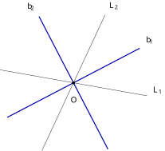
查看 TikZ 原始碼
\begin{document}
\begin{tikzpicture}[scale=1.5]
\draw (-10:2.2) -- (170:2.2);
\draw (65:2.2) -- (245:2.2);
\draw[blue!65!black, very thick] (27.5:2.2) -- (207.5:2.2);
\draw[blue!65!black, very thick] (117.5:2.2) -- (297.5:2.2);
\node[above right] at (-10:2.3) {$L_1$};
\node[above right] at (65:2.3) {$L_2$};
\node[above right] at (27.5:2.32) {$b_1$};
\node[above left] at (117.5:2.32) {$b_2$};
\fill (0,0) circle (1.2pt);
\node at (271:0.5) {$O$};
\end{tikzpicture}
\end{document}基本轨迹二：设直线
- 轨迹是两条角平分线：
- 两条角平分线互相垂直：
第一条用属于记号写开，就是对每一点
两相交直线与它们的角平分线如图 30-10 所示。
图 30-10：
、 相交于 ， 、 是它们的两条角平分线。
平分一对对顶角， 平分另一对，两者都过交点 。
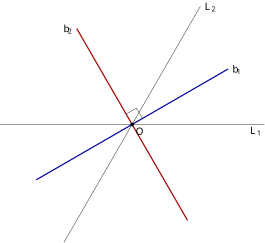
查看 TikZ 原始碼
\begin{document}
\begin{tikzpicture}[scale=1.5]
\draw (-3.1,0) -- (3.1,0);
\draw (-1.6,-2.771) -- (1.6,2.771);
\draw[blue!65!black, very thick] (-2.25,-1.3) -- (2.25,1.3);
\draw[red!65!black, very thick] (1.3,-2.252) -- (-1.3,2.252);
\draw (0.2425,0.14) -- (0.1025,0.3825) -- (-0.14,0.2425);
\node[below] at (2.9,0.02) {$L_1$};
\node[right] at (1.62,2.75) {$L_2$};
\node[right] at (2.27,1.28) {$b_1$};
\node[left] at (-1.32,2.23) {$b_2$};
\fill (0,0) circle (1.2pt) node[below right] {$O$};
\end{tikzpicture}
\end{document}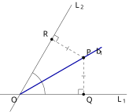
查看 TikZ 原始碼
\begin{document}
\begin{tikzpicture}[scale=1.5]
\coordinate (O) at (0,0);
\coordinate (P) at (1.905,1.1);
\coordinate (Q) at (1.905,0);
\coordinate (R) at (0.9526,1.6499);
\draw (-0.6,0) -- (3.2,0);
\draw (-0.3,-0.52) -- (1.55,2.684);
\draw[blue!65!black, very thick] (O) -- (2.45,1.4145);
\draw[dashed] (P) -- (Q) (P) -- (R);
\draw (1.755,0) -- (1.755,0.15) -- (1.905,0.15);
\draw (1.0276,1.7799) -- (1.1576,1.7049) -- (1.0826,1.5749);
\draw (1.845,0.55) -- (1.965,0.55);
\draw (1.3938,1.3144) -- (1.4638,1.4356);
\draw (0.75,0) arc (0:60:0.75);
\node[below] at (3.05,0.02) {$L_1$};
\node[right] at (1.57,2.66) {$L_2$};
\node[right] at (2.2,1.28) {$b_1$};
\node[below left] at (O) {$O$};
\fill (P) circle (1.3pt) node[above right] {$P$};
\fill (Q) circle (1.2pt) node[below right] {$Q$};
\fill (R) circle (1.2pt) node[above left] {$R$};
\end{tikzpicture}
\end{document}设
先证
两邻角的平分线各取一半，它们所夹角的度数为
故
图 30-11A：
、 相交于 ，四条平分线合成两条直线。
（蓝）平分一对对顶角， （红）平分另一对， 处的直角记号即 。
再证轨迹为两条角平分线。
（
若
若
§29.3.1 的角平分线等距引理说：
「若一点在角的平分线上，则该点到角的两边等距。」
把它用在
图 30-11B：（
方向） 在平分线 上， 、 分别是 到 、 的垂足（两处直角记号），由角平分线等距引理 （单撇），即 。
（
若
若
「角的内部到两边等距的点在该角的平分线上。」
故
两个方向合并，
剩下的一类条件（到两条平行线保持等距）同对着直线，它的答案用坐标算比用综合几何证省事，故连同方程一并交给 §30.2.1 的定理，本节不重列。
两条基本轨迹至此齐备。放在一起看，条件、轨迹、集合记号与依据一并列出：
| 条件（动点 |
轨迹（类型 + 位置） | 图形 | 集合记号 | 依据 |
|---|---|---|---|---|
| 线段 |
一条直线 | §29.1.1 引理 | ||
| 两条互相垂直的直线 | §29.3.1 引理 |
另外三类条件不在本表：与一点保持固定距离（圆）见 §30.1.2 圆的定义，与一直线保持固定距离、与两平行线保持等距两类见 §30.2.1 的定理。两类轨迹的条件只用到两类距离：两点间距离（§8.1）给出
描绘轨迹时按三步走：先判定类型（直线还是圆，一条还是两条），再定位置（过哪些关键点：圆心与半径、中点、交点），最后照描述作图；被剔除的点（若有）用空心点标出。
描述轨迹的标准答案是类型 + 位置：答「到
条件、点集、方程三者的关系说到此处才算闭合：§30.1.1 给「条件定轨迹」，并就地说明条件的代数式就是轨迹的方程；§30.1.2 给「条件定图形」；§30.1.3 立下两种基本轨迹的定理。剩下的问题只有一个：怎样把
30.2 轨迹的代数方程（Algebraic Equations of Loci）
本节难度上限：T B+ ｜ C C+ ｜ E C+ ｜ Q B
30.2.1 求轨迹方程的五步法（The Five-Step Method for Locus Equations）
§30.1.1 注记（轨迹的方程）已把「条件确定的点集」与「方程的解集」说成同一个集合，剩下的问题就只是怎么把
建：方程总是相对于某个坐标系而言的，所以第一步是建系，即题目没给坐标系时自己建立。选取的原则是利用对称，让尽量多的定点落在原点或坐标轴上、定线落在坐标轴上，使已知量的坐标最简单（§15.5.1 的坐标化策略说的就是这件事）。本例只有一个定点
设：轨迹的主角是动点，所以第二步是设动点为
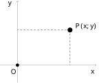
查看 TikZ 原始碼
\begin{document}
\begin{tikzpicture}[scale=1.5]
\draw[gray,->] (-0.6,0)--(2.7,0);
\draw[gray,->] (0,-0.6)--(0,2.2);
\coordinate (O) at (0,0);
\coordinate (P) at (1.8,1.2);
\draw[gray,densely dashed,thick] (P)--(1.8,0);
\draw[gray,densely dashed,thick] (P)--(0,1.2);
\fill (O) circle (1.6pt);
\fill (P) circle (2.4pt);
\node[below left] at (0.04,-0.06) {$O$};
\node[right] at (1.9,1.32) {$P(x,y)$};
\node at (2.58,-0.24) {$x$};
\node at (-0.26,2.08) {$y$};
\end{tikzpicture}
\end{document}图 30-12A：建系与设点。
定点
取作原点，动点记作 。 过
向两轴所作的两条灰色虚线只用来读出坐标 与 。
限：几何条件要先写成符号等式才能操作，所以第三步是把
代：几何量与坐标之间由公式搭桥，所以第四步是用两点距离公式（§15.2.2）、斜率公式（§15.2.6）或点到直线的距离公式（§20.5.1）把符号等式翻译成关于
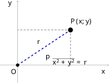
查看 TikZ 原始碼
\begin{document}
\begin{tikzpicture}[scale=1.5]
\draw[gray,->] (-0.6,0)--(3.1,0);
\draw[gray,->] (0,-0.6)--(0,2.2);
\coordinate (O) at (0,0);
\coordinate (P) at (1.8,1.2);
\draw[gray,densely dashed,thick] (P)--(1.8,0);
\draw[gray,densely dashed,thick] (P)--(0,1.2);
\draw[blue!65!black,very thick,dashed] (O)--(P);
\fill (O) circle (1.6pt);
\fill (P) circle (2.4pt);
\node[below left] at (0.04,-0.06) {$O$};
\node[right] at (1.72,1.48) {$P(x,y)$};
\node[above left] at (0.86,0.64) {$r$};
\node at (2.92,-0.24) {$x$};
\node at (-0.26,2.08) {$y$};
\node[anchor=south east] at (2.45,-0.13) {$\sqrt{x^{2}+y^{2}}=r$};
\end{tikzpicture}
\end{document}图 30-12B：限与代。
粗蓝虚线段就是条件里的
。 式子
是把这段长度用坐标写出的结果。
化：翻译出的方程通常杂乱，且翻译过程未必可逆，所以第五步是化简到最简形式并加以检验。本例两边都非负，平方是等价变形（§6.3.1），化简得
它正是 §30.1.2 里圆的坐标形式；两个方向回代都成立，既无增根也无漏点（如图 30-12C 所示）。
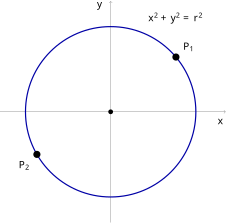
查看 TikZ 原始碼
\begin{document}
\begin{tikzpicture}[scale=1.5]
\draw[gray,->] (-2.6,0)--(2.7,0);
\draw[gray,->] (0,-2.6)--(0,2.6);
\draw[blue!65!black,very thick] (0,0) circle (2);
\coordinate (O) at (0,0);
\coordinate (P1) at (1.5321,1.2856);
\coordinate (P2) at (-1.7321,-1);
\fill (O) circle (1.6pt);
\fill (P1) circle (2.4pt);
\fill (P2) circle (2.4pt);
\node[above right] at (1.62,1.34) {$P_1$};
\node[below left] at (-1.82,-1.08) {$P_2$};
\node[anchor=north west] at (0.8,2.4) {$x^{2}+y^{2}=r^{2}$};
\node at (2.58,-0.24) {$x$};
\node at (-0.26,2.48) {$y$};
\end{tikzpicture}
\end{document}图 30-12C：化。
方程
的解集是以 为圆心、 为半径的圆。
、 是圆上两点，它们的坐标都使 成立。
五件事合起来就是求轨迹方程的标准流程：
- 建：建立适当的直角坐标系（题目未给时，利用对称性：定点取在原点或坐标轴上，定线取为坐标轴）；
- 设：设动点为
- 限：写出
- 代：用距离公式、斜率公式等把条件翻译成关于
- 化：化简方程，再检验等价性：方程的解与满足条件的点，两个方向都要对得上（详见下面的警告）。
第四步最常用的三件工具（
- 两点距离：
- 斜率：
- 点到直线的距离：
轨迹的方程要求恒等（§30.1.1 注记（轨迹的方程）），求解做的却往往是单向变形，三类问题最常出现：
- 不可逆变形引入增根：两边平方把
- 公式的隐含前提：斜率公式以
- 题意的退化位置：题目说
两个方向各查一次，解集与轨迹才互相完全确定。
直线型的两类条件（与一直线保持固定距离、与两平行线保持相等距离）用得上这套流程：它们的方程用坐标算，三行就能算完，顺带把「分居两侧」「位于正中间」这类位置说法一次清算。§30.1.3 没有为它们立综合几何定理，两条定理写在下面。
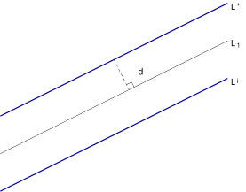
查看 TikZ 原始碼
\begin{document}
\begin{tikzpicture}[scale=1.5]
\draw[blue!65!black, very thick] (-3,-0.5) -- (3,2.5);
\draw (-3,-1.5) -- (3,1.5);
\draw[blue!65!black, very thick] (-3,-2.5) -- (3,0.5);
\draw[dashed] (0,1) -- (0.4,0.2);
\draw (0.534,0.267) -- (0.467,0.401) -- (0.333,0.334);
\node[right] at (0.55,0.68) {$d$};
\node[right] at (3,2.42) {$L^{+}$};
\node[right] at (3,1.42) {$L_1$};
\node[right] at (3,0.42) {$L^{-}$};
\end{tikzpicture}
\end{document}设
则
即轨迹是两条与
图 30-13：与
相距 的两条直线 、 。 虚线段自
上一点引向 （直角记号），其长即 。
设
由
由 §20.5.1 的点到直线距离公式，
按 §6.3.1 的绝对值分段表示逐支验算，上式当且仅当
两条直线上
把
最后看两侧：
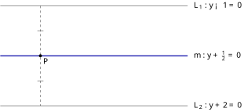
查看 TikZ 原始碼
\begin{document}
\begin{tikzpicture}[scale=1.5]
\draw (-2.8,1) -- (2.8,1);
\draw[blue!65!black, very thick] (-2.8,-0.5) -- (2.8,-0.5);
\draw (-2.8,-2) -- (2.8,-2);
\draw[dashed] (-1.6,1) -- (-1.6,-2);
\draw (-1.69,0.25) -- (-1.51,0.25);
\draw (-1.69,-1.25) -- (-1.51,-1.25);
\fill (-1.6,-0.5) circle (1.3pt) node[below right] {$P$};
\node[right] at (2.9,1) {$L_1: y-1=0$};
\node[right] at (2.9,-0.5) {$m: y+\frac{1}{2}=0$};
\node[right] at (2.9,-2) {$L_2: y+2=0$};
\end{tikzpicture}
\end{document}设
则
图 30-14：中线方程的左端是两直线方程左端的平均。
与 的中线为 ； 过
上一点 的虚线公垂线段被 平分（两道单撇）。
设
两边非负，平方是等价变形（§6.3.1），展开后相减：
由
恰好是两线间距
中线的左端
「中线」一词另有两味，不要相混：三角形的中线指顶点到对边中点的线段（§29.3.1），三角形的中位线指两边中点的连线（§8.6 的中点定理）；上面两条定理里说的都是两平行线的等距线。
下面用一道「条件是垂直」的题目完整走一遍五步法，三类检验里的前两类都会出现。
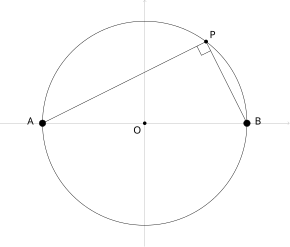
查看 TikZ 原始碼
\begin{document}
\begin{tikzpicture}[scale=1.5]
\coordinate (O) at (0,0);
\coordinate (A) at (-2.4,0);
\coordinate (B) at (2.4,0);
\coordinate (P) at (1.44,1.92);
\draw[gray!60, ->] (-3.4,0) -- (3.4,0);
\draw[gray!60, ->] (0,-2.9) -- (0,2.9);
\draw (O) circle (2.4);
\draw (P) -- (A) (P) -- (B);
\draw (1.2253,1.8127) -- (1.3326,1.598) -- (1.5473,1.7053);
\draw[fill=white] (A) circle (2.2pt);
\draw[fill=white] (B) circle (2.2pt);
\fill (O) circle (1.2pt) node[below left] {$O$};
\fill (P) circle (1.3pt) node[above right] {$P$};
\node[left] at (-2.5,0.05) {$A$};
\node[right] at (2.5,0.05) {$B$};
\end{tikzpicture}
\end{document}定点
建：题目已给坐标：直线
设：设
限：
代：当
由垂直线的斜率条件（§15.2.7），
化：两边乘以
检验：「代」的一步排除了
从几何上看：由 §29.1.2 的半圆推论，以
图 30-15：轨迹是以
为直径的圆，去掉 、 两点（空心点表示被剔除）。 圆上任一点
满足 （直角记号）； 方程为
（ ）。
这道题的轨迹恰好又是圆，但它不是从「到定点等距」的定义认出来的，而是从垂直条件算出来的。条件千变万化，五步法以不变应万变；不过当条件恰好命中基本轨迹时，还有更省力的走法。
30.2.2 求轨迹方程的三种方法（Three Methods for Finding Locus Equations）
五步法是通用流程。按条件的形态，实际求解有三条路线：直接法逐步翻译，定义法对照基本轨迹，参数法借道中间变量。三条路线在本小节各配示例。 直接法就是五步法直落：把几何条件直接翻译成坐标代数式，化简即得轨迹方程。条件直接涉及距离、斜率等基本量时都适用，是最通用的方法。
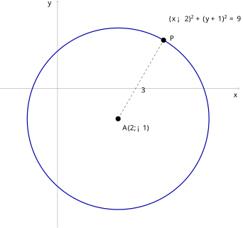
查看 TikZ 原始碼
\begin{document}
\begin{tikzpicture}[scale=1.5]
\draw[gray,->] (-1.9,0)--(6.0,0);
\draw[gray,->] (0,-4.6)--(0,2.9);
\draw[blue!65!black,very thick] (2,-1) circle (3);
\coordinate (A) at (2,-1);
\coordinate (P) at (3.5,1.5981);
\draw[dashed] (A)--(P);
\fill (A) circle (2.4pt);
\fill (P) circle (2.4pt);
\node[below right] at (2.06,-1.12) {$A(2,-1)$};
\node[right] at (3.62,1.66) {$P$};
\node[below right] at (2.68,0.1) {$3$};
\node[anchor=north west] at (3.6,2.5) {$(x-2)^{2}+(y+1)^{2}=9$};
\node at (5.88,-0.24) {$x$};
\node at (-0.26,2.78) {$y$};
\end{tikzpicture}
\end{document}定点
设与限：坐标系已由
代：由两点距离公式（§15.2.2），
化：两边非负，平方是等价变形（§6.3.1），得
检验：方程上任一点代回都使
图 30-16：轨迹
是以 为圆心、半径为 的圆。
为圆上任一点，虚线段 。
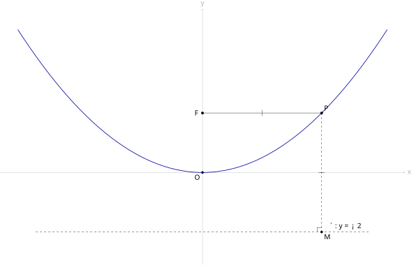
查看 TikZ 原始碼
\begin{document}
\begin{tikzpicture}[scale=1.5]
\coordinate (O) at (0,0);
\coordinate (F) at (0,2);
\coordinate (P) at (4,2);
\coordinate (M) at (4,-2);
\draw[gray!60, ->] (-6.8,0) -- (6.8,0) node[right] {$x$};
\draw[gray!60, ->] (0,-3.1) -- (0,5.5) node[above] {$y$};
\draw[dashed] (-5.6,-2) -- (5.6,-2);
\draw[blue!65!black, thick, domain=-6.2:6.2, samples=60, smooth] plot (\x,{\x*\x/8});
\draw (F) -- (P);
\draw[dashed] (P) -- (M);
\draw (2,1.9) -- (2,2.1);
\draw (3.9,0) -- (4.1,0);
\draw (3.85,-2) -- (3.85,-1.85) -- (4,-1.85);
\fill (O) circle (1.2pt) node[below left] {$O$};
\fill (F) circle (1.3pt) node[left] {$F$};
\fill (P) circle (1.3pt) node[above right] {$P$};
\fill (M) circle (1.2pt) node[below right] {$M$};
\node[above] at (4.8,-2) {$\ell: y=-2$};
\end{tikzpicture}
\end{document}定点
设：设
限：
代：
化：两边非负，平方是等价变形：
两边消去
检验：由
曲线上的点都满足条件，无增根；以上变形步步可逆，无漏点。
故轨迹方程为
图 30-17：
（实线）与 （虚线， ）相等（单撇）。 条件
化简得 ：开口向上的抛物线（蓝）。 定点
与定直线 将在 §30.3 获得「焦点」与「准线」的名字。
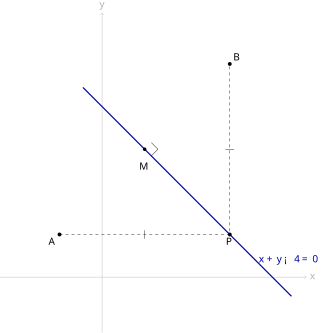
查看 TikZ 原始碼
\begin{document}
\begin{tikzpicture}[scale=1.5]
\coordinate (A) at (-1,1);
\coordinate (B) at (3,5);
\coordinate (M) at (1,3);
\coordinate (P) at (3,1);
\draw[gray!60, ->] (-2.4,0) -- (4.8,0) node[right] {$x$};
\draw[gray!60, ->] (0,-1.3) -- (0,6.2) node[above] {$y$};
\draw[blue!65!black, very thick] (-0.45,4.45) -- (4.45,-0.45);
\draw[dashed] (A) -- (P) -- (B);
\draw (1,1.1) -- (1,0.9);
\draw (2.9,3) -- (3.1,3);
\draw (1.156,2.844) -- (1.312,3) -- (1.156,3.156);
\fill (A) circle (1.3pt) node[below left] {$A$};
\fill (B) circle (1.3pt) node[above right] {$B$};
\fill (M) circle (1.2pt);
\fill (P) circle (1.3pt) node[below] {$P$};
\node at (1,2.6) {$M$};
\node[right, blue!65!black] at (3.6,0.4) {$x+y-4=0$};
\end{tikzpicture}
\end{document}定点
设：设
限：
代：由两点距离公式（§15.2.2）：
化：两边都是算术根，非负，平方是等价变形。展开两边：
两边消去
检验：平方在两边非负时步步可逆，无增根、无漏点；
故轨迹方程为
图 30-18：
的轨迹。 定点
、 关于蓝色直线对称， 在直线上， 与 （虚线，均标单撇）相等。 直线的方程为
，中点 处两线垂直（直角符号）。
条件稍作改动，直接法立刻给出一个陌生的面孔。下面这一例的轨迹是 §30.1.2 注记提到的椭圆，属增润内容、超出 DSE 常规课程的要求，放在这里只为看清直接法的通用。
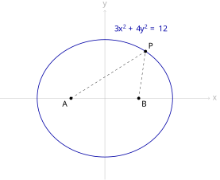
查看 TikZ 原始碼
\begin{document}
\begin{tikzpicture}[scale=1.5]
\coordinate (A) at (-1,0);
\coordinate (B) at (1,0);
\coordinate (P) at (1.2,1.3856);
\draw[gray!60, ->] (-3.1,0) -- (3.1,0) node[right] {$x$};
\draw[gray!60, ->] (0,-2.4) -- (0,2.6) node[above] {$y$};
\draw[blue!65!black, thick] (0,0) ellipse (2 and 1.7321);
\draw[dashed] (A) -- (P) -- (B);
\fill (A) circle (1.3pt) node[below left] {$A$};
\fill (B) circle (1.3pt) node[below right] {$B$};
\fill (P) circle (1.3pt) node[above right] {$P$};
\node[blue!65!black] at (1.05,2.05) {$3x^2+4y^2=12$};
\end{tikzpicture}
\end{document}定点
设：设
限：
代：
化：两个根式不能直接平方，先把一个根式单独留在一边：
两边平方并整理：
再平方一次：
检验：第一次平方要求
两个方向都守住，既无增根也无漏点。
故轨迹方程为
图 30-19：到两定点距离之和为定值的轨迹。
、 为两定点，动点 到两者的距离（虚线）之和恒为 。 化简得
：椭圆（蓝）。
定义法走的是另一条路：条件恰好命中已判明的轨迹类型时（§30.1.2 定义的圆、§30.1.3 的两种基本轨迹，以及 §30.2.1 两条定直线型定理给出的直线），不再列根式方程，先按定义点名图形，再借定义确定图形所需的少量几何量（一个点、一个方向），最后写成方程。
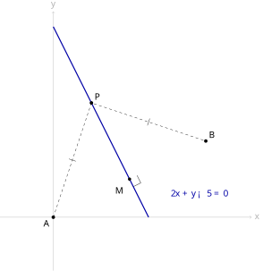
查看 TikZ 原始碼
\begin{document}
\begin{tikzpicture}[scale=1.5]
\coordinate (A) at (0,0);
\coordinate (B) at (4,2);
\coordinate (M) at (2,1);
\coordinate (P) at (1,3);
\draw[gray!60, ->] (-1.4,0) -- (5.2,0) node[right] {$x$};
\draw[gray!60, ->] (0,-1.4) -- (0,5.4) node[above] {$y$};
\draw[blue!65!black, very thick] (0,5) -- (2.5,0);
\draw[dashed] (A) -- (P) -- (B);
\draw (0.41,1.53) -- (0.59,1.47);
\draw (2.47,2.41) -- (2.53,2.59);
\draw (2.197,1.098) -- (2.295,0.901) -- (2.098,0.803);
\fill (A) circle (1.3pt) node[below left] {$A$};
\fill (B) circle (1.3pt) node[above right] {$B$};
\fill (M) circle (1.2pt);
\fill (P) circle (1.3pt) node[above right] {$P$};
\node at (1.75,0.7) {$M$};
\node[right, blue!65!black] at (3,0.6) {$2x+y-5=0$};
\end{tikzpicture}
\end{document}动点
条件是
（§15.2.3 中点公式）。
于是垂直平分线过
这条轨迹不必再逐点检验：整条垂直平分线都由与
图 30-20：
（单撇）命中基本轨迹一，轨迹是线段 的垂直平分线（蓝色粗线，方程 ）。 中点
处两线垂直（直角符号）。
对照一下：同一个「两点等距」的条件，用直接法要列两个根式、两边平方、展开、化简，才得到
课程要求会求轨迹为直线、圆和形式如
参数法超出 DSE 常规课程的要求，作增润处理。有时动点的两个坐标
再从两式中消去
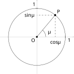
查看 TikZ 原始碼
\begin{document}
\begin{tikzpicture}[scale=1.5]
\coordinate (O) at (0,0);
\coordinate (P) at (0.868,1.034);
\draw[gray!60, ->] (-1.75,0) -- (1.75,0);
\draw[gray!60, ->] (0,-1.75) -- (0,1.75);
\draw (O) circle (1.35);
\draw (O) -- (P);
\draw[dashed] (P) -- (0.868,0) (P) -- (0,1.034);
\draw (0.42,0) arc (0:50:0.42);
\draw (1.35,0.06) -- (1.35,-0.06);
\draw (0.06,1.35) -- (-0.06,1.35);
\fill (O) circle (1.2pt) node[below left] {$O$};
\fill (P) circle (1.3pt) node[above right] {$P$};
\node at (0.58,0.24) {$\theta$};
\node[below] at (0.868,-0.08) {$\cos\theta$};
\node[left] at (-0.06,1.034) {$\sin\theta$};
\node[below right] at (1.38,0) {$1$};
\node[above left] at (0,1.38) {$1$};
\end{tikzpicture}
\end{document}动点
两个参数方程平方相加，由基本恒等式
由 §26.2.2 的单位圆定义，角
没有漏点，如图 30-21 所示。
图 30-21：
正是角 的终边与单位圆的交点（§26.2.2），两坐标是 的函数； 消去
得 。
消去参数只给出「动点所在的曲线」，参数的实际范围还决定「动点跑到曲线的哪一部分」。前一个示例里若把
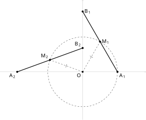
查看 TikZ 原始碼
\begin{document}
\begin{tikzpicture}[scale=1.5]
\coordinate (O) at (0,0);
\coordinate (A1) at (1.6,0);
\coordinate (B1) at (0,2.771);
\coordinate (M1) at (0.8,1.386);
\coordinate (A2) at (-3.007,0);
\coordinate (B2) at (0,1.094);
\coordinate (M2) at (-1.503,0.547);
\draw[gray!60, ->] (-3.8,0) -- (2.9,0);
\draw[gray!60, ->] (0,-2.2) -- (0,3.3);
\draw[dashed] (O) circle (1.6);
\draw[very thick] (A1) -- (B1);
\draw[very thick] (A2) -- (B2);
\draw[dashed] (O) -- (M1) (O) -- (M2);
\draw (0.331,0.733) -- (0.469,0.653);
\draw (-0.779,0.199) -- (-0.725,0.349);
\fill (O) circle (1.2pt) node[below left] {$O$};
\fill (A1) circle (1.3pt) node[below right] {$A_1$};
\fill (B1) circle (1.3pt) node[right] {$B_1$};
\fill (M1) circle (1.3pt) node[right] {$M_1$};
\fill (A2) circle (1.3pt) node[below left] {$A_2$};
\fill (B2) circle (1.3pt) node[above left] {$B_2$};
\fill (M2) circle (1.3pt) node[above left] {$M_2$};
\end{tikzpicture}
\end{document}长为
对任意
与参数法之一完全相同，消去
轨迹是整个单位圆，如图 30-22 所示。
图 30-22：杆的两个位置（粗线）与对应的中点
、 。 虚线圆即所求轨迹，
与 各带一道单撇。
这道题也有不用参数的走法，下面两条路都不引入参数。
- 直接法：设
- 纯几何法：
参数法的「参数」
30.3 延伸：抛物线的几何本源（Extension: The Geometric Origin of the Parabola）
本节难度上限：T B- ｜ C C+ ｜ E B- ｜ Q B-
本节内容超出 DSE 常规课程的要求，属扩展阅读。第二十一章把抛物线当作二次函数的图像研究，§30.2.2 又从「到定点与定直线等距」算出了一条抛物线。这不是巧合：抛物线与圆一样，是由距离条件定义的轨迹（§30.1.2 已给出定义），圆由「一个定点、一个定长」确定，抛物线由「一个定点、一条定直线」确定。本节给这条轨迹配上专名与要素，并推导标准方程，说明系数
的几何本源。
30.3.1 抛物线的几何定义（Geometric Definition of the Parabola）
§30.2.2 的抛物线示例中，定点
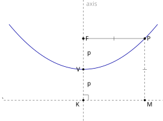
查看 TikZ 原始碼
\begin{document}
\begin{tikzpicture}[scale=1.5]
\coordinate (F) at (0,1.2);
\coordinate (K) at (0,-1.2);
\coordinate (V) at (0,0);
\coordinate (P) at (2.4,1.2);
\coordinate (M) at (2.4,-1.2);
\draw[dashed] (0,-2.0) -- (0,2.7);
\draw[dashed] (-3.1,-1.2) -- (3.1,-1.2);
\draw[blue!65!black, thick, domain=-2.9:2.9, samples=50, smooth] plot (\x,{\x*\x/4.8});
\draw (F) -- (P);
\draw[dashed] (P) -- (M);
\draw (1.2,1.12) -- (1.2,1.28);
\draw (2.32,0) -- (2.48,0);
\draw (0.2,-1.2) -- (0.2,-1.0) -- (0,-1.0);
\fill (F) circle (1.3pt) node[right] {$F$};
\fill (K) circle (1.2pt) node[below left] {$K$};
\fill (V) circle (1.2pt) node[left] {$V$};
\fill (P) circle (1.3pt) node[right] {$P$};
\fill (M) circle (1.2pt) node[below right] {$M$};
\node[left] at (-3.0,-1.2) {$\ell$};
\node[right, gray!70] at (0.03,2.55) {axis};
\node[right] at (0.07,0.6) {$p$};
\node[right] at (0.07,-0.6) {$p$};
\end{tikzpicture}
\end{document}设
图 30-23：定点
、定直线 与垂足 。
是 的中点，粗蓝曲线是 。
为曲线上一点， 是 向 所作垂线的垂足， 与 各带一道单撇。
- 顶点（Vertex）：线段
- 对称轴（Axis of Symmetry）：直线
- 焦距（Focal Length）：
抛物线关于对称轴对称：设
30.3.2 标准方程的推导（Derivation of the Standard Equation）
定义给的是距离等式，下一步照 §30.2.1 的五步法把它翻译成关于
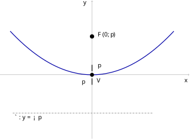
查看 TikZ 原始碼
\begin{document}
\begin{tikzpicture}[scale=1.5]
\draw[gray,->] (-3.6,0)--(3.8,0);
\draw[gray,->] (0,-2.5)--(0,2.9);
\coordinate (V) at (0,0);
\coordinate (F) at (0,1.5);
\coordinate (K) at (0,-1.5);
\draw[blue!65!black,very thick] plot[variable=\x, domain=-3.2:3.2, samples=60, smooth] (\x,{\x*\x/6});
\draw[gray,densely dashed,thick] (-3.1,-1.5)--(K)--(2.4,-1.5);
\draw[very thick] (0,0.14)--(0,0.39);
\draw[very thick] (0,-0.39)--(0,-0.14);
\fill (V) circle (2.2pt);
\fill (F) circle (2.4pt);
\node[right] at (0.14,1.56) {$F(0,p)$};
\node[right] at (0.14,0.32) {$p$};
\node[below right] at (0.1,-0.06) {$V$};
\node[left] at (-0.2,-0.32) {$p$};
\node[right] at (-3.1,-1.68) {$\ell: y=-p$};
\node at (3.68,-0.24) {$x$};
\node at (-0.28,2.78) {$y$};
\end{tikzpicture}
\end{document}设
顶点在原点，对称轴为
图 30-24：抛物线
的配置。 顶点
在原点，对称轴为 轴，焦点 ，准线 ，开口向上。
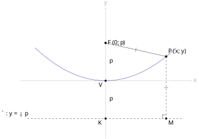
查看 TikZ 原始碼
\begin{document}
\begin{tikzpicture}[scale=1.5]
\coordinate (O) at (0,0);
\coordinate (F) at (0,1.5);
\coordinate (K) at (0,-1.5);
\coordinate (P) at (2.4,0.96);
\coordinate (M) at (2.4,-1.5);
\draw[gray!60, ->] (-3.4,0) -- (3.4,0) node[right] {$x$};
\draw[gray!60, ->] (0,-2.3) -- (0,2.9) node[above] {$y$};
\draw[dashed] (-3.1,-1.5) -- (3.1,-1.5);
\draw[blue!65!black, domain=-2.8:2.8, samples=50, smooth] plot (\x,{\x*\x/6});
\draw (F) -- (P);
\draw[dashed] (P) -- (M);
\draw (1.182,1.152) -- (1.218,1.308);
\draw (2.32,-0.27) -- (2.48,-0.27);
\draw (2.25,-1.5) -- (2.25,-1.35) -- (2.4,-1.35);
\fill (O) circle (1.2pt) node[below left] {$V$};
\fill (F) circle (1.3pt) node[right] {$F(0,p)$};
\fill (K) circle (1.2pt) node[below left] {$K$};
\fill (P) circle (1.3pt) node[above right] {$P(x,y)$};
\fill (M) circle (1.2pt) node[below right] {$M$};
\node[above left] at (-3.0,-1.5) {$\ell: y=-p$};
\node[right] at (0.07,0.75) {$p$};
\node[right] at (0.07,-0.75) {$p$};
\end{tikzpicture}
\end{document}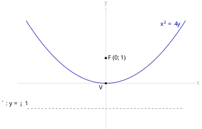
查看 TikZ 原始碼
\begin{document}
\begin{tikzpicture}[scale=1.5]
\coordinate (O) at (0,0);
\coordinate (F) at (0,1);
\draw[gray!60, ->] (-3.5,0) -- (3.5,0) node[right] {$x$};
\draw[gray!60, ->] (0,-1.8) -- (0,3.0) node[above] {$y$};
\draw[dashed] (-3.1,-1) -- (3.1,-1);
\draw[blue!65!black, thick, domain=-3.15:3.15, samples=60, smooth] plot (\x,{\x*\x/4});
\fill (O) circle (1.2pt) node[below left] {$V$};
\fill (F) circle (1.3pt) node[right] {$F(0,1)$};
\node[above left] at (-3.0,-1) {$\ell: y=-1$};
\node[blue!65!black] at (2.55,2.35) {$x^2=4y$};
\end{tikzpicture}
\end{document}建系与设点（如图 30-25 所示）：顶点取为原点，对称轴取为
图 30-25：建系。
顶点
在原点，对称轴为 轴， 、 ，准线 。 轨迹上任一点
满足 （单撇）， 为垂足。
设
列式：由抛物线定义，
化简：两边非负，平方是等价变形：
两边展开：
消去两边的
取
图 30-26：
时标准方程为 ，即 （蓝）； 焦点
，准线 。
检验等价性：由
反过来，任取满足
确实满足条件。
两个方向都成立，轨迹恰为
把标准方程写成
焦点为
于是任何形如
30.3.3 系数
§21.6 已总结过代数观察：
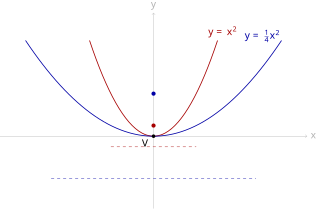
查看 TikZ 原始碼
\begin{document}
\begin{tikzpicture}[scale=1.5]
\coordinate (O) at (0,0);
\coordinate (F1) at (0,0.25);
\coordinate (F2) at (0,1);
\draw[gray!60, ->] (-3.6,0) -- (3.6,0) node[right] {$x$};
\draw[gray!60, ->] (0,-1.7) -- (0,2.9) node[above] {$y$};
\draw[dashed, red!65!black] (-1.0,-0.25) -- (1.0,-0.25);
\draw[dashed, blue!65!black] (-2.4,-1) -- (2.4,-1);
\draw[red!65!black, thick, domain=-1.5:1.5, samples=40, smooth] plot (\x,{\x*\x});
\draw[blue!65!black, thick, domain=-3.0:3.0, samples=60, smooth] plot (\x,{\x*\x/4});
\fill[red!65!black] (F1) circle (1.4pt);
\fill[blue!65!black] (F2) circle (1.4pt);
\fill (O) circle (1.2pt) node[below left] {$V$};
\node[red!65!black] at (1.62,2.45) {$y=x^2$};
\node[blue!65!black] at (2.55,2.35) {$y=\frac{1}{4}x^2$};
\end{tikzpicture}
\end{document}
- 反比关系：
图 30-27：红色
： ，焦距 ，焦点 （红点），准线 （红虚线），开口窄； 蓝色
： ， ，焦点 （蓝点），准线 （蓝虚线），开口宽。 焦距越大，开口越宽。
一句话：按几何意义说，
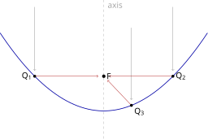
查看 TikZ 原始碼
\begin{document}
\begin{tikzpicture}[scale=1.5]
\coordinate (F) at (0,1);
\coordinate (Q1) at (-2,1);
\coordinate (Q2) at (2,1);
\coordinate (Q3) at (0.8,0.16);
\draw[blue!65!black, thick, domain=-3:3, samples=60, smooth] plot (\x,{\x*\x/4});
\draw[dashed, gray!70] (0,-0.8) -- (0,3.2);
\draw[->, gray] (-2,3.0) -- (-2,1.16);
\draw[->, gray] (2,3.0) -- (2,1.16);
\draw[->, gray] (0.8,2.4) -- (0.8,0.32);
\draw[->, red!65!black] (Q1) -- (-0.16,1);
\draw[->, red!65!black] (Q2) -- (0.16,1);
\draw[->, red!65!black] (Q3) -- (0.11,0.885);
\fill (F) circle (1.4pt) node[right] {$F$};
\fill (Q1) circle (1.2pt) node[left] {$Q_1$};
\fill (Q2) circle (1.2pt) node[right] {$Q_2$};
\fill (Q3) circle (1.2pt) node[below right] {$Q_3$};
\node[right, gray!70] at (0.03,3.05) {axis};
\end{tikzpicture}
\end{document}以下光学性质超出 DSE 常规课程的要求，作增润处理。
平行于对称轴的光线射向抛物面，经反射后全部通过焦点
图 30-28：抛物线为
（焦距 ，焦点 ）。 三束平行于对称轴的光线（灰色箭头）射到抛物线上的
、 、 ，反射后（红色箭头）全部通过焦点 。
应用随处可见：卫星天线与射电望远镜用「接收」方向，平行信号经反射汇聚于焦点，接收器就装在焦点处；汽车前灯与探照灯用「发射」方向，灯泡装在焦点处，射出的光束平行。「焦点」一词，正来自这种光的汇聚。
回到第二十一章的
30.4 小结（Summary）
三条主线：
- 几何视角（§30.1）：轨迹是满足几何条件的点的集合，
- 代数视角（§30.2）：轨迹方程
- 抛物线作为轨迹（§30.3，延伸）：抛物线是到定点（焦点）与定直线（准线）等距的点的轨迹，顶点在原点、开口向上时标准方程为
易错点：
- 描述轨迹不完整：只说类型不说位置（「一条直线」而非「线段
- 求出方程后忘记排除退化点（如三角形顶点与另两点共线的位置），或忘记附加限制（如
- 两边平方后不检验等价性，混入增根。
- 变形前后不核对定义域：式子在某点无意义（根号内为负、分母为零），该点就不是方程的解，轨迹上也不该出现（§19.1.3 的自然定义域）。
- 把点到直线的距离与两点距离混用：
- 参数法消参后忘记检查参数范围，把一部分曲线误答成整条曲线。
- 把焦距
方法总表
| 目标 | 已知条件 | 方法 | 主要依据 |
|---|---|---|---|
| 描述并描绘轨迹 | 距离型条件（对定点、对定直线） | 对照两种基本轨迹一览的集合记号，与圆、两条平行线的定义，答「类型 + 位置」 | §30.1.2、§30.1.3、§30.2.1 |
| 说出轨迹的几何意义 | 已求得的轨迹或它的方程 | 报出形状（哪一类图形）与位置（圆心与半径、顶点与对称轴等） | §30.1.1、§30.3.3 |
| 把已知几何对象写成点集条件 | 图形名称（直线、圆、抛物线等） | 按一览反查距离等式或不等式 | §30.1.2 |
| 判断某个方程是否所求轨迹的方程 | 条件 |
两个方向各查一次：方程的解都满足条件，满足条件的点都是解 | §30.1.1、§30.2.1 |
| 求轨迹方程（通用） | 任何几何条件 | 五步法：建、设、限、代、化 | §30.2.1 |
| 求直线型轨迹的方程 | 用 §20.5.1 的距离公式拆绝对值；中线取两式左端的平均 | §30.2.1 | |
| 快速求轨迹方程 | 条件命中基本轨迹 | 定义法：先点名图形，再化为方程 | §30.2.2 |
| 求轨迹方程（动点间接确定） | 动点依赖另一变动量 | 参数法（增润）：设参数、消参数 | §30.2.2 |
| 求抛物线型的轨迹方程 | 到定点与定直线等距 | 直接法逐步翻译，或认出焦点与准线 | §30.2.2、§30.3.2 |
| 求 |
二次函数 | 配方定顶点 |
§30.3.3 |
回顾全章：轨迹是「条件 → 点集」的对应，在几何世界里描述图形，在坐标世界里写出方程，两边由等价性衔接。五类条件中圆排第一，这一安排意味深长：本章从「到定点等距」出发得到了
中英对照词汇表（Glossary）
| 中文术语 | 英文 | 符号或简写 | 备注 |
|---|---|---|---|
| 轨迹 | Locus | 满足几何条件的点的集合 | |
| 动点 | Moving Point | 属于轨迹的点 | |
| 几何意义（轨迹的） | Geometric Meaning | 轨迹的形状与位置；§30.1.1 注记（轨迹的几何意义） | |
| 完备性 | Completeness | 满足条件的点都在轨迹上（不少、无漏点） | |
| 纯粹性 | Exclusiveness | 轨迹上的每一点都满足条件（不多、无增根） | |
| 三点共线 | Collinearity | 距离与坐标判据见 §20.3.1 的两条引理 | |
| 介于两点之间 | Betweenness | ||
| 线段 | Line Segment | ||
| 圆的内部 | Interior of a Circle | ||
| 圆盘 | Closed Disk | ||
| 半平面 | Half-plane | ||
| 同侧与异侧 | Same Side and Opposite Sides | 代入直线方程所得两值同号与否 | |
| 基本轨迹 | Basic Locus | §30.1.3 立定理的两条：两点等距、两相交直线等距；集合式与依据见该节一览 | |
| 点到直线的距离 | Distance from a Point to a Line | 见 §8.6、§20.5.1 | |
| 垂直平分线 | Perpendicular Bisector | 基本轨迹一，引理见 §29.1.1 | |
| 角平分线 | Angle Bisector | 基本轨迹二，两条互相垂直 | |
| 中线（两平行线的） | Midline of two parallel lines | §30.2.1 定理；方程为两式左端的平均；与三角形的中线（§29.3.1）、中位线（§8.6）无关 | |
| 方程的定义域 | Domain of an Equation | 使 |
|
| 方程的解集 | Solution Set | ||
| 方程的图形 | Graph of an Equation | 解集这个点集（§19.2.1 注记）；轨迹的方程要求 |
|
| 轨迹的方程 | Equation of a Locus | 条件的代数式，与条件等价（§30.1.1 注记（轨迹的方程）） | |
| 增根 | Extraneous Root | 不可逆变形引入、不满足原条件的解（§30.2.1 警告） | |
| 漏点 | Lost Point | 满足条件却未被方程收进的点（§30.2.1 警告） | |
| 五步法 | Five-Step Method | 建、设、限、代、化 | |
| 退化 | Degenerate | 共线、重合等使图形塌缩 | |
| 直接法 | Direct Method | 条件直接翻译成代数 | |
| 定义法 | Definition Method | 先照定义点名图形，再写方程（§30.2.2） | |
| 参数法 | Parameter Method | 增润；消去参数 | |
| 参数 | Parameter | 中间变量 | |
| 参数方程 | Parametric Equations | 增润 | |
| 抛物线 | Parabola | 到定点与定直线等距的轨迹 | |
| 焦点 | Focus | ||
| 准线 | Directrix | ||
| 顶点 | Vertex | ||
| 对称轴 | Axis of Symmetry | 过焦点且垂直于准线的直线 | |
| 焦距 | Focal Length | ||
| 标准方程 | Standard Equation | 顶点在原点、开口向上 | |
| 光学性质 | Optical Property | 增润；平行光反射后过焦点 |
备课提示（Teaching Notes）
- 用长时间曝光照片与动态几何软件引入。 官方课程阐释建议以汽车照明灯、星流迹的长时间曝光照片引入轨迹概念，课堂可用动态几何软件拖动点
- 与上一章衔接、避免重复。 圆的定义、两条等距引理、直角三角形的外接圆半径公式都已在第二十九章建立，本章只是把它们重新组装成轨迹语言。圆在本册出现三次的分工要讲清：§8.9「圆的基本概念」小节给文字集合式、§29.1.1 给符号式、§30.1.2 把它认作「到定点等距」这一条件所确定的轨迹，三者不是重复而是逐层收紧。建议课堂先让学生复述两条等距引理，再证基本轨迹一与二，体会「用已建立的定理组装新结论」的方法；这也是本教材一贯的方法构建原则：不新增中间概念，用前文定理直接搭桥。
- 等价性是本章的灵魂。 纯粹性与完备性、轨迹方程所要求的恒等（§30.1.1 注记（轨迹的方程））、五步法第五步的检验、增根与退化，是同一件事在不同位置的表现。§30.2.1 的示例（
- 描述规范要刻意训练。 课程的描绘与描述题要求「类型 + 位置」齐全：线段
- 五类条件的落点与证明深度。 DSE 要求的五类条件本章分三处结清：与一点保持固定距离的那一类就是 §30.1.2 圆的定义，就地说明即可；与一直线保持固定距离、与两平行线保持等距那两类不另给综合几何证明，直接到 §30.2.1 用距离公式拆绝对值，三行算完，学生也更容易记住是「两条」；余下两类（两点等距、两相交直线等距）在 §30.1.3 各有一条双向证明，用到 §29.1.1、§29.3.1 两条等距引理：能力一般的班级可以只作图演示、用刻度尺量距接受结论；能力强的班级应完整走双向论证，为「轨迹题必须证两个方向」的答题格式打底。
- 增润内容的定位。 参数法（§30.2.2）与 §30.3 全部（焦点与准线定义、标准方程、系数
- 与习题册的接口。 本章各节命题以节首难度上限为上确界；参数法与 §30.3 内容属增润，不作为「各章小节」命题素材，如需入题只可放综合练习或理论习题。
- §30.1.2 是补课节，不新增考点。 三点共线的判据与「直线
- 与后续章节的接口。 圆的方程将在下一章系统展开（标准方程与一般方程、直线与圆的交点、圆的切线）；抛物线的平移与反射接 §15.4 与 §21.2 的配方法；「条件 → 点集」的思考方式与第二十八章不等式解集、可行区域的视角一脉相承，可提醒学生互相印证。
✅ 已執行（2026-09-14）：第二輪八處批注落實，集中 §30.1。①重寫定義（軌跡）：「條件
✅ 已執行（2026-09-18）：第三輪：按用戶指示「先前對於各種幾何圖形的定義不完備……建議在這裡先從軌跡的角度出發重新定義一次」新增 §30.1.2「幾何對象的軌跡定義」補課節，原 §30.1.2「五種基本軌跡」順延為 §30.1.3。①新節：引理（三點共線的距離刻畫與座標判據）＋證明（以
✅ 已執行（2026-09-18）：第四輪十二處批注（用戶開場指示「我註釋了 Chapter 30 的課題講義，直接修改。」，免寫方案章節、直接落地）。①章節重排（批注：「事實上，在一開始簡介軌跡的時候就已經利用集合論的方法了。而集合論本身就是定義
✅ 已執行（2026-09-18）：第五輪十二處批注（用戶開場指示「我註釋了 chapter 30 課題講義，直接修改。」，免寫方案章節、直接落地），全章 %% 批注回收到零。①§30.1.3 由五條收為三條（批注：「標題改一改，不是五種，對應的措辭都需要改」；提問後用戶選定「三條：刪基本軌跡一與四」）：「基本軌跡一（圓）」與「基本軌跡四（到定直線距離為定值）」兩個 ad-thm／ad-proof 塊連同配圖刪除（圓即 §30.1.2 的定義、兩條平行線由 §30.2.1 的坐標定理給出），原二、三、五重編為一、二、三，符號改為 %% 零殘留、「五種基本軌跡／基本軌跡四／基本軌跡五／
✅ 已執行（2026-09-19）：第六輪九處批注與通讀自查所見三十四處（用戶開場指示「通讀全文，規劃總體的修改方案」，方案岔口全取推薦檔）。①§30.1.3 收為兩種（批注：「我不是將這個定理移到 30.2 的部分了嗎？怎麼還沒刪啊？同步修改所有的上下文。」）：ad-thm（基本軌跡三）＋其 ad-proof 連圖 30-12、30-13A／B／C 與「中線」辨異段整塊移出，節名改「兩種基本軌跡（The Two Basic Loci）」，一覽表由三行縮為兩行、> 補充句。⑦自查改正：完備性與純粹性的定義與英文名整對調（完備性＝不漏、純粹性＝不多），圖 30-2 改為 2A「集合少一點」／2B「集合多一點」對照分幅；圖 30-27、30-31 原以 circle 代拋物線（編譯可過而畫錯），30-27 重畫為真拋物線配置圖、30-29（無曲線且 %% 零殘留、板塊全在 4.2 白名單、5 個結論板塊與 5 個 ad-proof 一一配對、題注 37 條連號且每幅恰被引用一次（懸空 0、多引 0、未引 0）、錨句審計 0 違規、扎堆審計 0、表格內無裸豎線、em dash 0、全庫節號死鏈 0。
姊妹側同步：《官方考纲与课题讲义关联分析》Ch30 第二部分四行概要与第三部分前知衔接／逐小节对照／覆盖缺口改写（§30.1.3 行标题改「两种基本轨迹」、§30.1.4 行删除、12.2 五类条件的新落点为「圆→§30.1.2、两类等距→§30.1.3、另两类→§30.2.1 两条定理」，全章配图统计改 41 块／37 幅）；《給讀者的簡介》更新日志 2026-09-19 段新增 Ch30（修訂·第六輪）與跨章同步條；《课题讲义写作规范》4.4 新增「定理陈述的形式」「读者视角与措辞禁区」两条、4.5 第 17 条补「圆锥曲线配图须用 plot 画曲线本体」、DoD 新增 24「措辞禁区」25「曲线本体」、历史存量新增 L17；Ch16 §16.1.3 前向链改指 §30.1.1 注记（轨迹的方程）；Ch8 圆周／周长用词与本节口径复核无冲突。
✅ 已執行（2026-10-01）：第七輪，用戶指示「Chapter 30 沒有介紹什麼是幾何意義一詞，即描述軌跡的形狀與位置」——全章兩處「幾何意義」（§30.3.3 節標題、備課提示第 6 條）均為直接用詞、從未交代，而《DSE 數學詞彙表》已登記該詞；第 19 章 §19.2.4 的定義係為函數圖像變換所寫，不覆蓋軌跡的形狀與位置。三個岔口經提問全取推薦檔。①§30.1.1 新增「注記（軌跡的幾何意義）」（置於注記（軌跡的方程）之後、注記（完備性與純粹性）之前）：幾何意義＝把點集放到平面上說清它呈現什麼形狀（哪一類圖形）與占在什麼位置（這一類裏的哪一個）；兩件實例取讀者已見的對象（以
✅ 已執行（2026-10-13·記號整改）：按規範 4.4.3「線段長與線段」新則，全章 20 處「線段
反向链接
正在加载反向链接…
本文引用
正在加载…